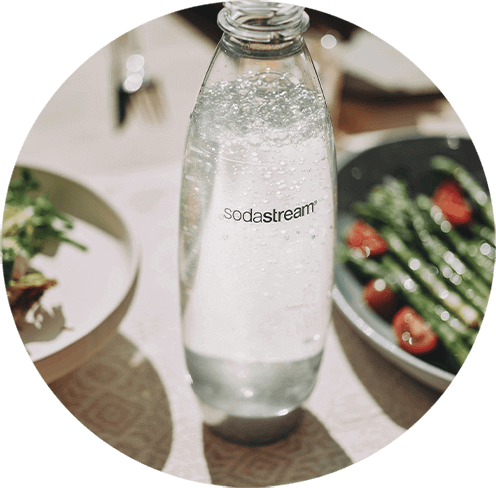

Butelka
FUSE 1L
BIAŁE, DWUPAK
ZMIEŃ SWOJĄ WODĘ
W GAZOWANĄ JUŻ
W KILKA SEKUND!
Chroń swoje ulubione bąbelki w funkcjonalnych i wytrzymałych butelkach Fuse od SodaStream. Jednolitrowe butelki Fuse zabierzesz ze sobą do pracy, w podróż, na spacer lub na trening. Są one odporne na wysokie temperatury i można je myć w zmywarce. Dodatkowo są one wolne od szkodliwego BPA i pomagają ograniczyć zużycie jednorazowego plastiku. Ciesz się swoim ulubionym napojem gdziekolwiek jesteś, jednocześnie będąc EKO!
BĄBELKI ZAWSZE POD RĘKĄ

WYTRZYMAŁE
Jednolitrowe butelki Fuse są wytrzymałe i odporne na wysokie
temperatury. Nie
zawierają szkodliwego dla zdrowia BPA i bez
problemu mogą być myte w zmywarce.
Czy wiesz, że…
1769* jednorazowych butelek plastikowych.
Dołącz do nas i razem wyeliminujmy
do 78 miliardów
jednorazowych butelek plastikowych do 2025 roku.

JAK WYGLĄDA BĄBELKOWANIE?
1
Napełnij butelkę Fuse
SodaStream zimną
wodę.
2
Zamocuj butelkę w
saturatorze
SodaStream.
3
Naciśnij przycisk lub
pociągnij za dźwignię i
uwolnij
bąbelki!
Wielorazowe butelki Fuse pasują do wszystkich
ekspresów SodaStream.
JEDNA SODASTREAM – WIELE MOŻLIWOŚCI
Jesteś miłośnikiem gazowanych napojów? Koniecznie zerknij na naszą bogatą ofertę syropów SodaStream i z ich pomocą stwórz wyjątkowe napoje. W naszym menu znajdziesz ukochane klasyki (takie jak Pepsi czy Mirindę) i autorskie kompozycje (np. Pink Grapefruit lub Lemon Lime). Wybierz kilka smaków i zawsze bądź gotów na pojawienie się niespodziewanych gości.
#PushForBetter